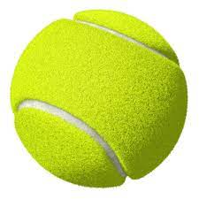
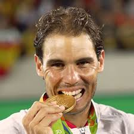

El tenis, también llamado tenis de campo,2 es un deporte de raqueta practicado sobre una pista rectangular (compuesta por distintas superficies, las cuales pueden ser cemento, tierra batida o hierba), delimitada por líneas y dividida por una red.3 Se disputa entre dos jugadores (individuales) o entre dos parejas (dobles). El objetivo del juego es lanzar una pelota golpeándola con la raqueta de modo que rebote en el otro lado pasando la red dentro de los límites permitidos del campo del rival, procurando que este no pueda devolverla para conseguir un segundo rebote en el suelo y por ende un punto.
JUGADOR DESTACADO
Rafa Nadal
Rafael Nadal Parera (Manacor, Islas Baleares, 3 de junio de 1986), más conocido como Rafa Nadal, es un tenista profesional español que ocupa la cuarta posición del ranking ATP.78
Está considerado como el mejor tenista de toda la historia en pistas de tierra batida91011 y uno de los mejores de todos los tiempos. Hasta la fecha, es el tenista masculino con mayor número de títulos de Grand Slam en individuales, con 21, por delante del suizo Roger Federer y del serbio Novak Djokovic, ambos con 20. Ha conseguido el Abierto de Australia en dos ocasiones, el Torneo de Roland Garros en trece ediciones (siendo el tenista que más veces lo ha conseguido en toda la historia), el Campeonato de Wimbledon en dos ocasiones y el Abierto de Estados Unidos en cuatro ocasiones. Se encuentra en segunda posición, tras el serbio Novak Djokovic (37), como jugador con más títulos de Masters 1000 en modalidad individual, con 36; y por delante de otros célebres tenistas como el suizo Roger Federer (28), el checo Ivan Lendl (22) y los norteamericanos John McEnroe (19), Jimmy Connors (17) o Andre Agassi (17).
Es el tenista masculino más joven de la historia en conseguir el Golden Slam en la carrera, que consiste en lograr los cuatro Grand Slam y la medalla de oro en los Juegos Olímpicos a lo largo de la carrera, logro únicamente compartido con el estadounidense Andre Agassi. Es, junto al serbio Novak Djokovic, uno de los dos tenistas masculinos en toda la Era Abierta en conseguir el Doble Grand Slam en la carrera, que consiste en ganar, al menos dos veces, cada uno de los cuatro Grand Slam a lo largo de la carrera. Además, ambos tenistas son los únicos que han sido capaces de ganar en un mismo año (2010) tres Grand Slams en tres superficies distintas. Nadal es el tenista que más veces ha ganado desde el comienzo de la Era Abierta un mismo torneo de Grand Slam y Masters 1000: Roland Garros y Montecarlo (el primero en trece ocasiones y el segundo en once); y el primero en ganar al menos un título de Grand Slam durante diez temporadas consecutivas (desde 2005 hasta 2014).
Ocupa la cuarta posición en la lista de jugadores con más títulos ATP con 91, sólo por detrás del estadounidense Jimmy Connors (109), del suizo Roger Federer (103) y del checo Ivan Lendl (94). Actualmente es el tenista con más títulos conseguidos outdoor (89) y el tenista con más títulos conseguidos en tierra batida (62) de la Era Abierta. Adicionalmente, se encuentra en segunda posición como jugador con más títulos ATP Tour 500 ganados (23), sólo por detrás del suizo Roger Federer (24).
Únicamente frente a dos jugadores posee un récord negativo habiéndose enfrentado un mínimo de 10 ocasiones entre ellos: el serbio Novak Djokovic (28-30) y el ruso Nikolai Davydenko (5-6), este último ya retirado. Además, es el cuarto tenista por cantidad de victorias en toda la historia, con 1043, y cuenta actualmente con el mejor rendimiento de la historia con un 83,3% de victorias, llegando a alcanzar un pico de 83,84% después de Roland Garros 2014.12
Es el tenista español con el mayor número de títulos individuales (91, superando a Manuel Orantes y a Conchita Martínez, con 33), más títulos de Grand Slam (21, superando a Manolo Santana y a Arantxa Sánchez Vicario, con 4), más títulos de Masters 1000 (36, superando a Conchita Martínez, con 9) y con más semanas en el número 1 del ranking mundial de la ATP, con 209. Es el único tenista en la historia del tenis en ser número 1 en tres décadas diferentes: 2000s, 2010s y 2020s.13